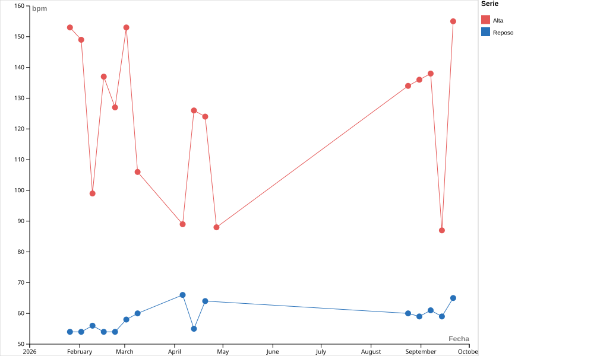

¿Cómo varió el tiempo dedicado a fuerza y carrera a lo largo de los meses?
Evolución mensual del tiempo dedicado a cada actividad.
Entrega final infovis 2Q2026 — Valentina Barboza
¿Qué dicen mis entrenamientos sobre mis hábitos y mi rendimiento? A partir de los datos registrados en Garmin, exploro cómo distribuyo mi tiempo entre fuerza y carrera, cómo varía el gasto calórico y qué patrones aparecen a lo largo de los meses.
Evolución mensual del tiempo dedicado a cada actividad.
La relación entre la duración y el gasto calórico estimado en sesiones de fuerza y carrera de al menos 20 minutos. Las líneas muestran la tendencia de cada actividad.
Esta visualización compara semanalmente mi frecuencia cardíaca en reposo con los valores altos registrados durante mis entrenamientos, entre febrero y septiembre de 2026.

La frecuencia cardíaca en reposo se mantuvo relativamente estable, principalmente entre 54 y 66 bpm. En cambio, los valores altos presentaron mayores variaciones según el tipo y la intensidad del entrenamiento realizado durante cada semana.
Los picos de frecuencia cardíaca permiten observar cómo cambia la intensidad del esfuerzo según el tipo de entrenamiento realizado durante cada semana.
Los valores más altos aparecen principalmente en los entrenamientos mixtos y de fuerza, con picos cercanos a los 150 bpm. Las sesiones de carrera registradas durante febrero presentan valores algo menores, mientras que las semanas sin actividad aparecen sin área.
El sueño, los pasos diarios y el entrenamiento permiten observar cómo se relacionan el descanso y el movimiento a lo largo de las semanas.

Cada círculo representa una semana. Su color indica el tipo de entrenamiento y su tamaño, los minutos de actividad registrados. Seleccioná un círculo para consultar esa semana en el gráfico inferior.